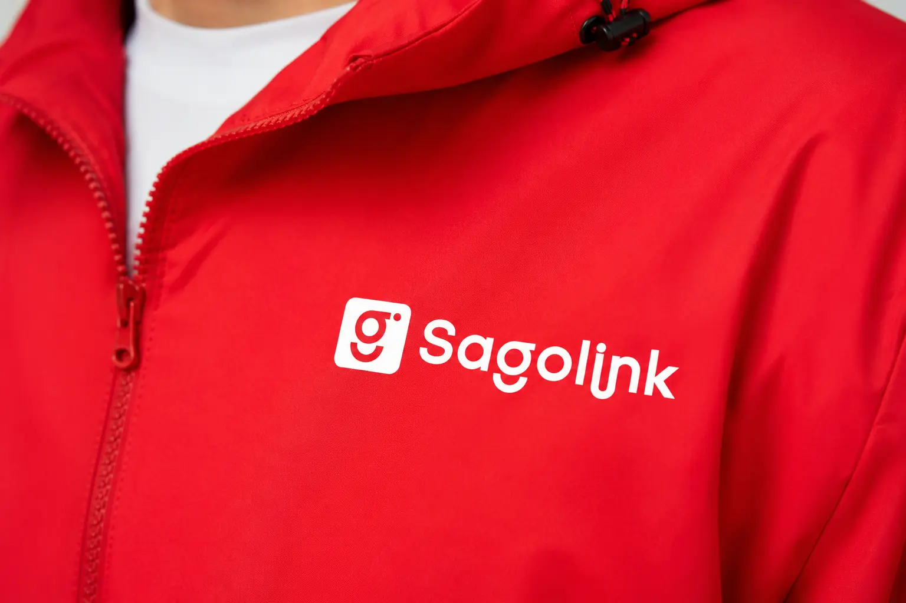
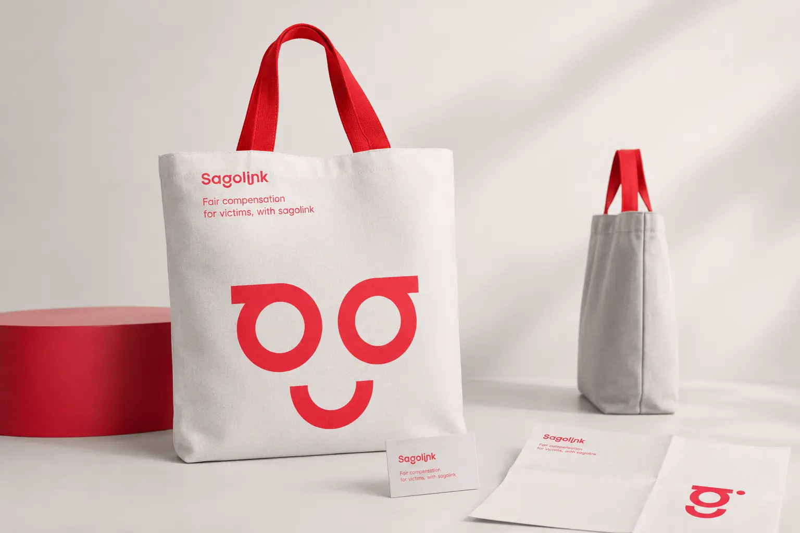
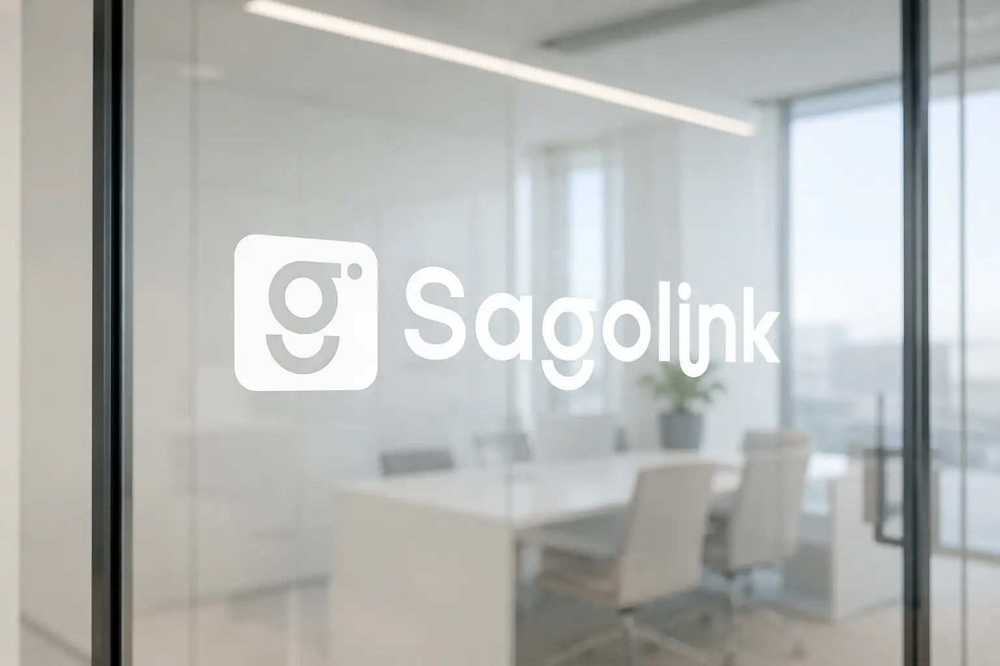
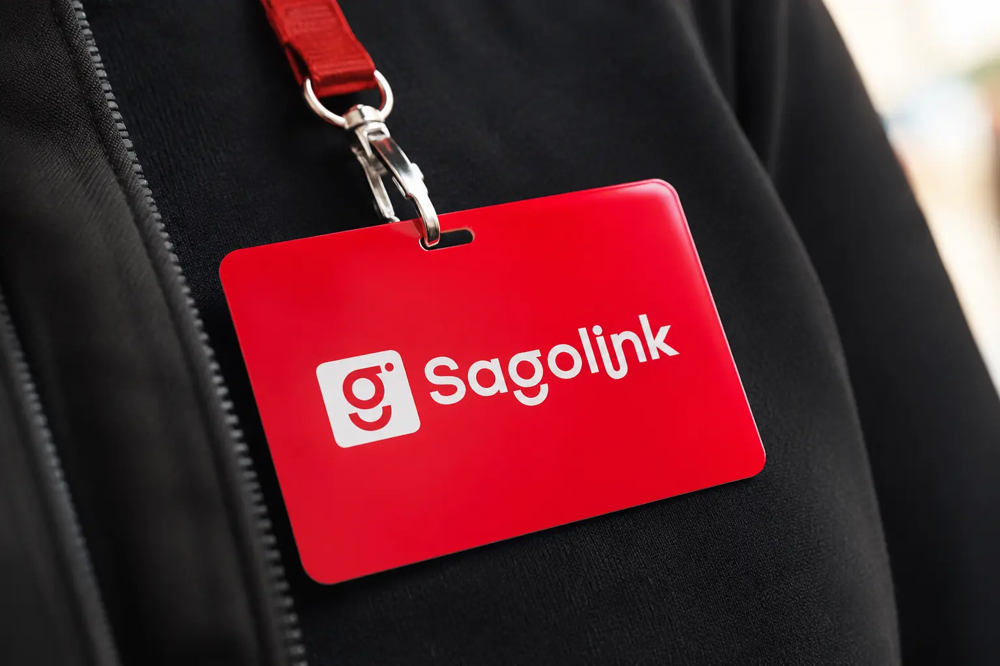
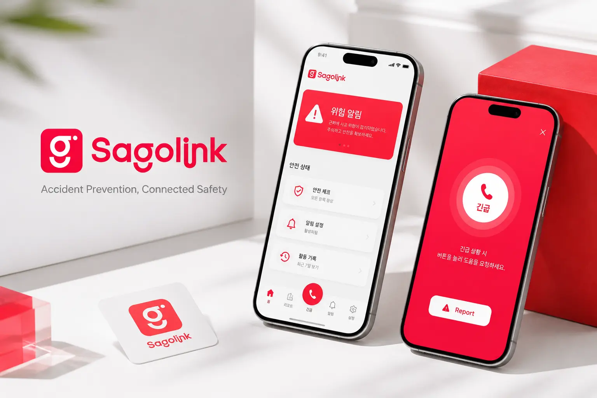
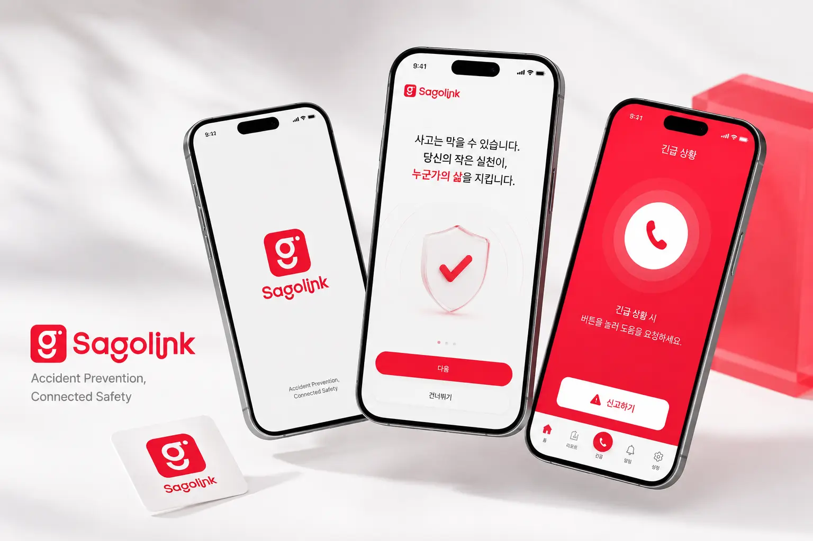
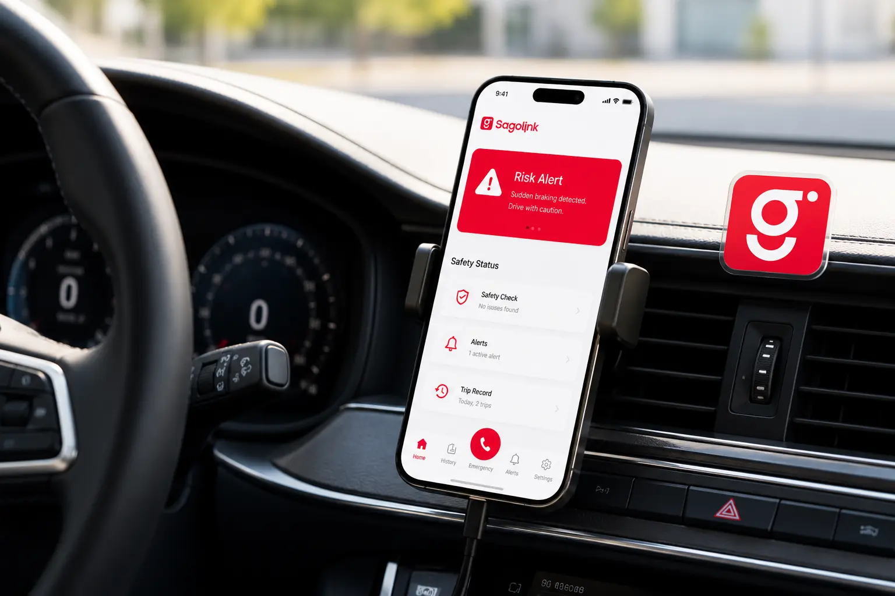
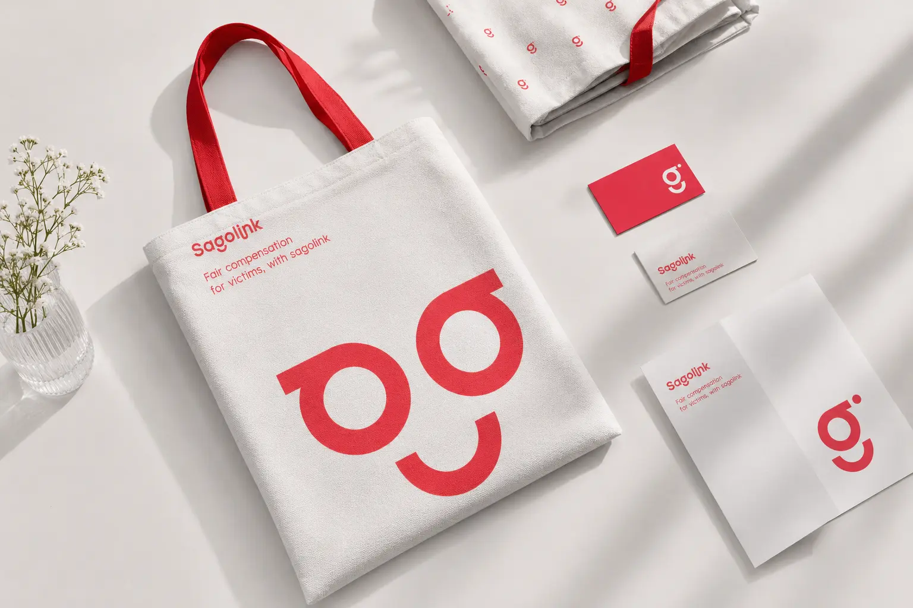
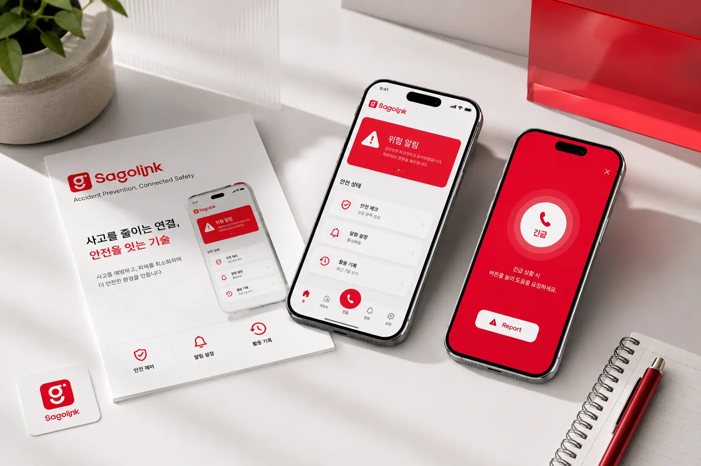
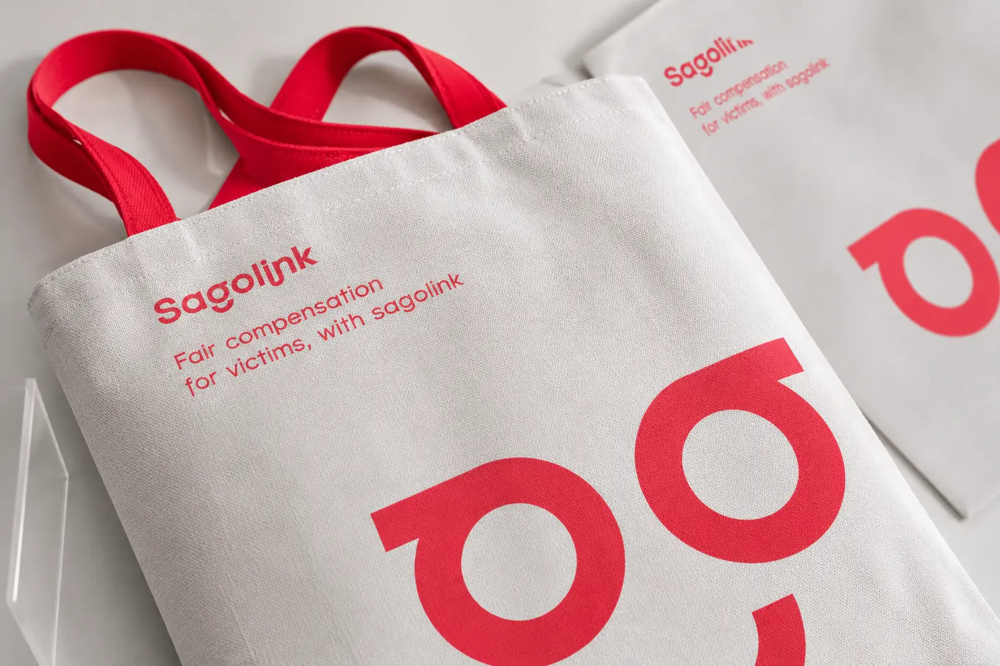

사고링크의 목표는 사고 피해자가 필요한 정보를 빠르게 이해하고, 적절한 보상 절차로 자연스럽게 연결될 수 있도록 돕는 것이다. 사고 이후에는 정보 부족, 복잡한 절차, 심리적 부담이 함께 발생하기 때문에 브랜드는 명확함과 신뢰감을 동시에 제공해야 한다. 사고링크는 피해자에게는 안내자 역할을, 서비스 제공자에게는 신뢰할 수 있는 연결 플랫폼의 이미지를 구축하는 것을 목표로 한다.
Portfolio / Brand Identity
SAGOLINK
Sagolink는 사고 피해자와 보상·지원 절차를 연결하는 서비스 브랜드이다. 브랜드명은 ‘사고’와 ‘링크’를 결합해, 사고 이후 복잡하게 흩어지는 정보와 절차를 하나로 연결한다는 의미를 담고 있다. 전체 브랜드는 선명한 레드 컬러와 부드러운 라운드 형태를 중심으로 구성되어 있으며, 사고라는 무거운 주제를 어렵고 차갑게 보이기보다 쉽고 친근하게 전달하는 방향으로 설계되었다.
- Scope
- Brand Identity / Platform
- Studio
- BDLab
- Year
- 2026

사고링크의 핵심 메시지는 “피해자를 위한 공정한 보상 연결”로 정리할 수 있다. 제안서에 사용된 “Fair compensation for victims, with sagolink” 문구는 브랜드의 목적을 직접적으로 보여준다. 단순히 사고 정보를 전달하는 브랜드가 아니라, 피해자가 정당한 보상을 받을 수 있도록 돕는 조력자의 이미지를 가진다. 브랜드명과 메시지가 직관적이기 때문에 서비스 성격을 빠르게 이해시키는 장점이 있다.
사고링크의 디자인은 밝고 선명한 레드를 중심으로 구성되어 있다. 사고나 보상 관련 서비스는 자칫 딱딱하고 법률적인 인상을 줄 수 있지만, 사고링크는 둥근 로고타입과 간결한 심볼을 사용해 접근성을 높였다. 전체 그래픽은 부드러운 곡선과 반복 패턴을 활용해 친근한 인상을 만들고, 에코백·손수건·파우치 같은 생활형 굿즈에 적용했을 때도 부담 없이 사용할 수 있는 브랜드 이미지를 만든다. 즉, 전문성보다는 ‘쉽게 다가가는 보상 지원 서비스’에 가까운 방향이다.








